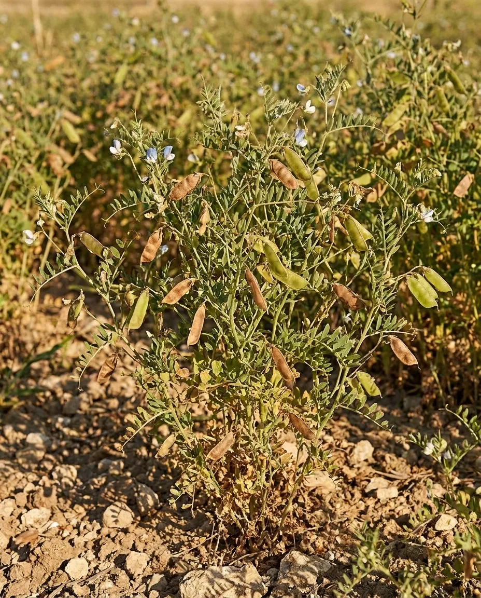
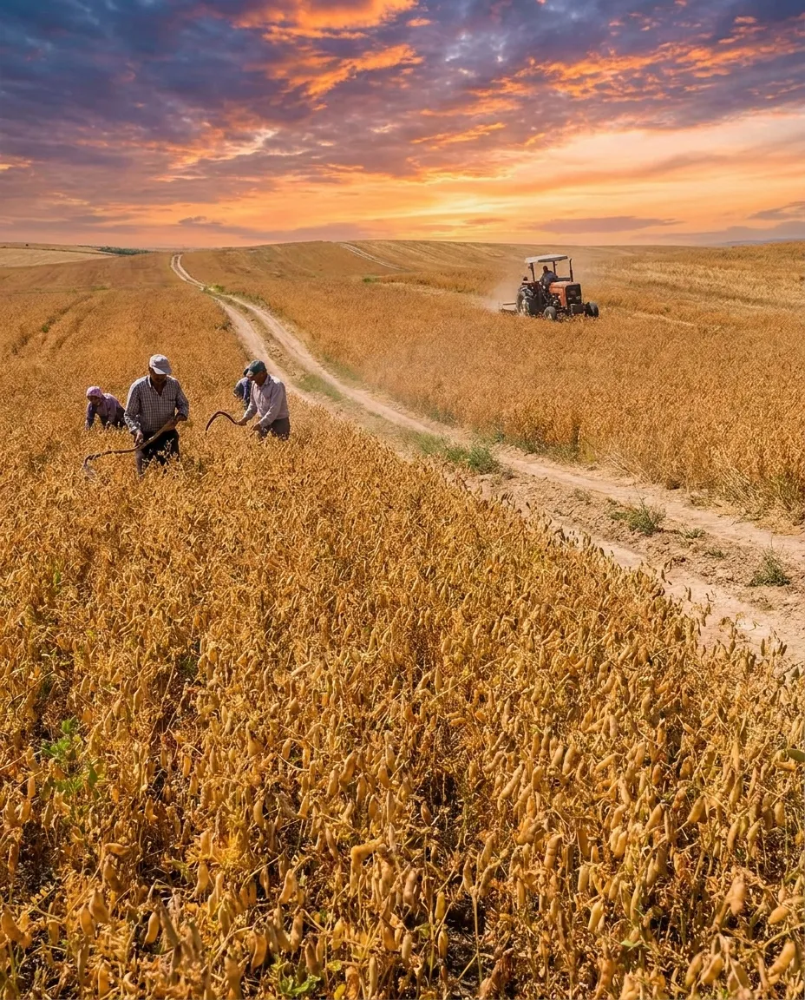

СЕЛЕКЦИОННАЯ ПРОГРАММА
"ЧЕЧЕВИЦА"
Описание программы "Чечевица"
Чечевица представляет собой ценную продовольственную культуру, отличающуюся высоким содержанием легкоусвояемого белка: в её семенах присутствует от 22 до 36 %. Культура широко используется в пищевой и консервной промышленности. Семена чечевицы характеризуются высокими вкусовыми качествами и хорошей разваримостью. Это позволяет применять их в приготовлении разнообразных блюд: супы, каши, кисели. Мука из чечевицы находит применение при производстве белковых препаратов, галет и печенья, консервов, колбасных изделий, шоколада. Важное преимущество чечевицы перед большинством других зернобобовых культур — отсутствие алкалоидов, гликозидов и др. в семенах.

Направления селекции:
- Увеличение урожайности
- Пригодность к механизированной уборке
- Устойчивость к осыпанию
- Скороспелость
- Засухоустойчивость
- Устойчивость к корневым гнилям и ржавчине
